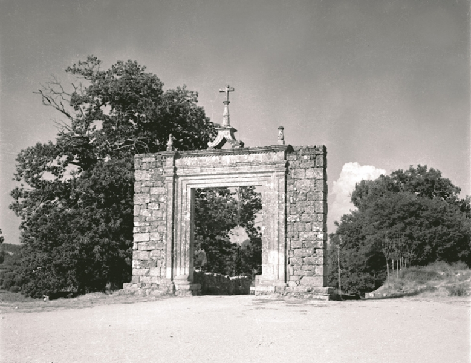

A história deste belo espaço começa em 1149 quando o Bispo de Viseu, D. Odório comprou a Herdade de Fontelo. Em 1399 o Bispo João Homem dá início à construção do paço, obra continuada por outros prelados que lhe sucederam.Mas foi no séc. XVI, por iniciativa do Bispo D. Miguel da Silva, poderoso dignatário da Igreja que ambicionava a tiara papal, senhor de avultada fortuna e gosto renascentista, que o Fontelo atingiu o seu máximo esplendor, transformando-se numa das mais exóticas e luxuosas quintas de recreio de Portugal, em voga no séc. XVI entre as classes nobres e o clero rico, por influência dos ambientes paisagísticos do Renascimento italiano.

Nesse mesmo século, o bispo D. Gonçalo Pinheiro mandou construir a capela de S. Jerónimo (1563), que ainda subsiste com uma inscrição em grego (A Jerónimo eremita, consagrou o bispo Pinheiro) e dois pórticos, datados de 1565, num dos quais se pode ver as armas de D. Gonçalo. Hoje, embora reduzido nas dimensões e esplendor que deve ter tido no tempo de D. Miguel da Silva, o Parque do Fontelo não serve o prazer exclusivo de um eleito, mas transformou-se num salutar local para lazer e desporto, acessível a todos quantos queiram usufruí-lo.